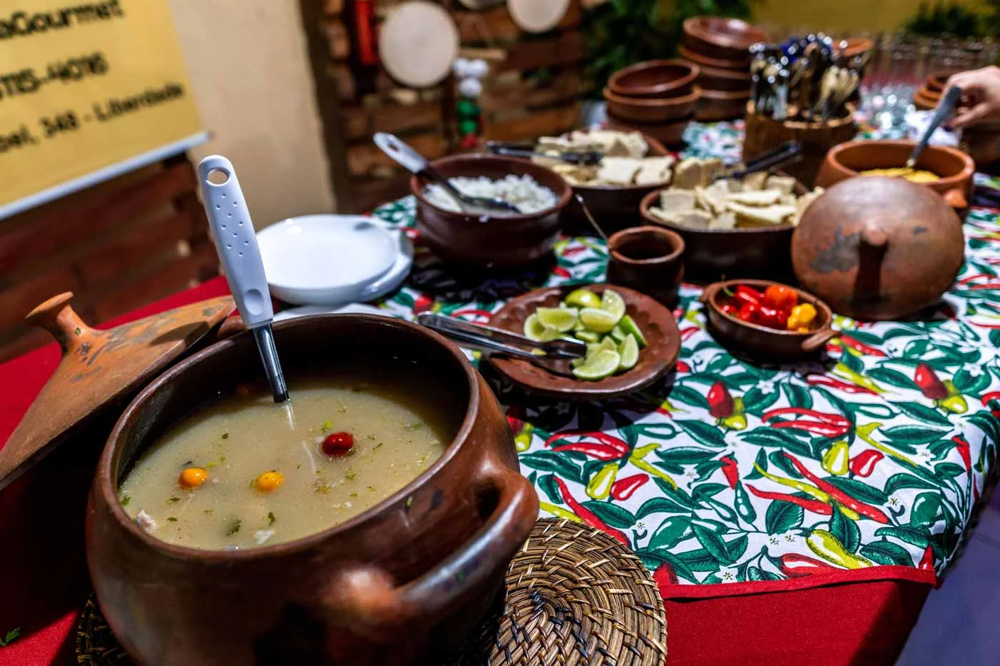

Boa Vista
Boa Vista é a capital de Roraima, localizada na região Norte do Brasil, e é um destino turístico emergente que atrai visitantes por sua proximidade com a natureza e sua rica diversidade cultural. Como a única capital brasileira completamente localizada na Amazônia, Boa Vista oferece aos turistas uma mistura única de beleza natural, arquitetura moderna e tradicional, e um vibrante cenário cultural. A cidade também se destaca pela sua influência indígena, já que muitos povos nativos habitam a região, além de ser um ponto de acesso para quem deseja explorar a natureza selvagem de Roraima, como a serra do Tepequém e as mesas da região.
Boa Vista é uma cidade com grande potencial turístico devido à sua localização estratégica, próxima à Venezuela e à Guiana, o que também a torna um ponto de convergência de diversas culturas e influências. A cidade oferece desde ecoturismo, com passeios por florestas e rios amazônicos, até atividades culturais e históricas, com museus e feiras que celebram a diversidade local.
Principais pontos turísticos
- Praça do Centro Cívico - Monumento aos Garimpeiros
- Orla Taumanan
- Serra do Tepequém
- Ponte dos Macuxi
- Igreja Matriz de Nossa Senhora do Carmo
A Praça do Centro Cívico se chama Joaquim Nabuco. Localizada no coração de Boa Vista, abriga dois pontos históricos. A Praça do Coreto “Raimundo Soares Marreta”, inaugurada em 1963, homenageando o paraense Raimundo Soares, um dos principais promotores da cultura de Boa Vista (décadas de 60 e 70). A praça foi revitalizada em 2016. Já o Monumento ao Garimpeiro, feito por Walter Bastos de Melo e Francisco da Luz Moraes, homenageia os garimpeiros que trabalharam em Roraima na época em que o garimpo era permitido no Estado (décadas de 1970 e 1980).
Inaugurada em julho de 2004, a Orla Taumanan (idioma macuxi significa paz), é um dos mais lindos cartões-postais de Boa Vista. É um espaço de lazer às margens do Rio Branco, com lanchonetes, restaurantes, espaços para passeio e diversão. A Orla ganhou uma estrutura mais moderna e hoje está interligada ao Parque do Rio Branco. O local conta com duas plataformas: Weikepá (parte inferior) com três quiosques, e a Meiremê (parte superior) com mais dois quiosques.
A Serra do Tepequém é um dos principais destinos turísticos de Boa Vista. Localizada a aproximadamente 80 km da cidade, é uma área montanhosa de grande beleza cênica, com várias trilhas e cachoeiras. A região é conhecida por ser um excelente ponto para a prática de ecoturismo, como trekking, banho de cachoeira, além de ser um ótimo lugar para acampamentos.
A Ponte dos Macuxi é um ponto de destaque para os turistas interessados em conhecer mais sobre a história e a cultura indígena local. A ponte conecta Boa Vista a várias comunidades indígenas, como a dos Macuxi, um dos maiores grupos indígenas da região. É um lugar interessante para quem deseja aprender sobre a vida e os costumes dos povos nativos de Roraima.
Um dos pontos turísticos visitados pelos turistas e moradores da região. Foi a primeira igreja construída no Rio Branco. Os padres Beneditinos reconstruíram a Matriz com características germânicas e a tornaram única na região Amazônica no ano de 1920. Entre os anos de 2005 e 2007, com o intuito de tentar reconstruir as características originais da matriz, foi iniciado pela prefeitura, um trabalho de restauração do prédio.
Principais pontos gastronômicos
- Barracão Do Poeta
- Localização: Centro de Boa Vista.
- Riu Restaurante
- Localização: Orla Taumanan.
- FlutuaíBV Sky Bar & Lounge
- Localização: Caçari.
- Damurida Gourmet 
- Localização: Liberdade.
O Barracão do Poeta é um dos restaurantes mais tradicionais de Boa Vista, conhecido por suas deliciosas comidas típicas da culinária nordestina. O cardápio conta com uma grande variedade de pratos, desde as comidas mais simples até as mais elaboradas, todas preparadas com ingredientes frescos e saborosos. O ambiente é rústico e aconchegante, com uma decoração que remete às raízes culturais do Nordeste brasileiro.
O Riu Restaurante é um dos mais famosos restaurantes de Boa Vista. O Riu é conhecido por sua culinária contemporânea, que combina sabores locais com técnicas modernas de preparo. Com um ambiente acolhedor e elegante, o restaurante oferece uma experiência gastronômica muito boa, mas que pode ser diferente de acordo com o horário que você vai. Isso porque na hora do almoço, você vai encontrar um buffet completo no estilo self-service e um cardápio com pratos deliciosos que refletem a rica cultura culinária de Roraima, como o tambaqui assado, o filhote grelhado e o pirarucu à moda do chef, por exemplo. Entretanto, à noite o restaurante oferece uma ampla seleção de vinhos, bebidas e música ao vivo para acompanhar sua refeição.
Com atendimento impecável e pratos deliciosos, o restaurante Riu certamente irá superar suas expectativas e proporcionar uma experiência inesquecível.
O FlutuaíBv é um dos principais pontos turísticos da cidade de Boa Vista, atraindo milhares de visitantes todos os anos. Ele é uma ótima opção para quem quer se refrescar do calor típico da região e se divertir com a família e amigos porque ele é um flutuante localizado na beira do rio Branco. O ambiente é muito especial, pois é o primeiro bar e restaurante do tipo em Boa Vista. Além disso, o bar está localizado na margem do rio, o acesso é fácil e você pode ir de carro até o local. A estrutura conta com dois andares e um gazebo de apoio em terra firme, onde você pode relaxar antes de entrar no flutuante. Para se deliciar, o amplo cardápio oferece entradas, pratos principais individuais ou para compartilhar, opções de refeições para crianças e sobremesas.
Há também uma bela carta de vinhos, espumantes nacionais e internacionais, além de outras bebidas alcoólicas e não alcoólicas para animar o seu dia.
Local especializado em damurida de peixe, o Restaurante Damurida Gourmet tem o ambiente todo especial. O local é na verdade, o jardim da casa de uma das proprietárias que abre seu espaço para receber amigos e clientes de todas as partes do Brasil que querem se deliciar com o caldo de peixe mais apreciado de Roraima. De origens indígenas, o damurida, neste restaurante é feito de forma “gourmetizada”, pois leva ingredientes de qualidade e pimenta na medida certa. Por fim, vale comentar que no Restaurante Damurida Gourmet o cardápio é resumido a damurida de peixe e paçoca de carne de sol com farinha, dois pratos da culinária típica de Roraima que vale a pena conhecer.
O buffet é livre e você pode ficar a vontade para se servir em cuias de barro, que trazem ainda mais as origens locais.
Principais pontos culturais
- Teatro Municipal de Boa Vista
- Localização: São Vicente.
- Feira do Produtor
- Localização: São Vicente.
- Museu Integrado de Roraima
- Localização: Dos Estados.
O Teatro Municipal de Boa Vista é um dos principais espaços culturais da cidade. Com uma programação variada que inclui apresentações de teatro, dança, música e eventos literários, o teatro é um excelente ponto para quem deseja conhecer a cena cultural de Boa Vista. O teatro também abriga eventos de relevância nacional e internacional, trazendo artistas e espetáculos de diversos gêneros.
A Feira do Produtor é um dos locais mais tradicionais para a venda de produtos artesanais e alimentos típicos de Roraima. A feira é um ponto de encontro entre produtores locais e consumidores, oferecendo uma grande variedade de produtos, como artesanato, frutas e legumes frescos, além de pratos típicos. A feira acontece semanalmente, e é um excelente local para conhecer mais sobre a culinária e cultura local.
O Museu Integrado de Roraima é um importante ponto cultural da cidade, onde os visitantes podem conhecer mais sobre a história e a cultura local. O museu abriga coleções relacionadas aos povos indígenas, ao período colonial e à formação do estado de Roraima. É um local essencial para quem deseja entender melhor as raízes e a evolução de Boa Vista e de Roraima como um todo.